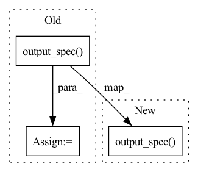

Pattern ID :41431

Before Change
return results
def is_compatible(self, model: lit_model.Model) -> bool:
output_spec = model.output_spec()
return True if self._find_supported_pred_keys(output_spec) else False
def _find_supported_pred_keys(self, output_spec: types.Spec) -> list[str]:
return lit_utils.find_spec_keys(output_spec, types.RegressionScore)
After Change
def is_compatible(self, model: lit_model.Model,
dataset: lit_dataset.Dataset) -> bool:
del dataset // Unused as regressions depend on model only
return lit_utils.spec_contains(model.output_spec(), types.RegressionScore)
def _find_supported_pred_keys(self, output_spec: types.Spec) -> list[str]:
return lit_utils.find_spec_keys(output_spec, types.RegressionScore)
In pattern: SUPERPATTERN
Frequency: 3
Non-data size: 3
Instances
Fragment ID: 116526730
Project Name: pair-code/lit
Commit Name: ecd3a6623f2a0d45ae26c74d0d72fb68b7bcb9aa
Time: 2022-11-03
Author: ryanmullins@google.com
File Name: lit_nlp/components/regression_results.py
M Class Name: RegressionInterpreter
N Class Name: RegressionInterpreter
M Method Name: is_compatible(3)
N Method Name: is_compatible(2)
M Parent Class: lit_components.Interpreter
N Parent Class: lit_components.Interpreter
M File Name: lit_nlp/components/regression_results.py
N File Name: lit_nlp/components/regression_results.py
M Start Line: 72
M End Line: 73
N Start Line: 72
N End Line: 74
'>
Before Change
self._spec[f"{model_name}:{field}"] = model.output_spec()[field]
def find_fields(self, model: lit_model.Model) -> List[str]:
sal_keys = utils.find_spec_keys(
model.output_spec(),
(types.FeatureSalience, types.ImageSalience, types.TokenSalience,
types.SequenceSalience))
return sal_keys
After Change
self._spec[f"{model_name}:{field}"] = model.output_spec()[field]
def find_fields(self, model: lit_model.Model) -> list[str]:
return utils.find_spec_keys(model.output_spec(), _SALIENCE_FIELD_TYPES)
def _run_single(self, ex: JsonDict, mo: JsonDict, fields: list[str],
model: lit_model.Model) -> dict[str, SalienceTypes]:
'>
Fragment ID: 116526731
Project Name: pair-code/lit
Commit Name: ecd3a6623f2a0d45ae26c74d0d72fb68b7bcb9aa
Time: 2022-11-03
Author: ryanmullins@google.com
File Name: lit_nlp/components/model_salience.py
M Class Name: ModelSalience
N Class Name: ModelSalience
M Method Name: find_fields(2)
N Method Name: find_fields(2)
M Parent Class: components.Interpreter
N Parent Class: components.Interpreter
M File Name: lit_nlp/components/model_salience.py
N File Name: lit_nlp/components/model_salience.py
M Start Line: 33
M End Line: 37
N Start Line: 37
N End Line: 37
'>
Before Change
return results
def is_compatible(self, model: lit_model.Model) -> bool:
output_spec = model.output_spec()
return True if self._find_supported_pred_keys(output_spec) else False
def _find_supported_pred_keys(self, output_spec: types.Spec) -> list[str]:
return lit_utils.find_spec_keys(output_spec, types.MulticlassPreds)
After Change
def is_compatible(self, model: lit_model.Model,
dataset: lit_dataset.Dataset) -> bool:
del dataset // Unused during model classification
return lit_utils.spec_contains(model.output_spec(), types.MulticlassPreds)
def _find_supported_pred_keys(self, output_spec: types.Spec) -> list[str]:
return lit_utils.find_spec_keys(output_spec, types.MulticlassPreds)
'>
Fragment ID: 116526732
Project Name: pair-code/lit
Commit Name: ecd3a6623f2a0d45ae26c74d0d72fb68b7bcb9aa
Time: 2022-11-03
Author: ryanmullins@google.com
File Name: lit_nlp/components/classification_results.py
M Class Name: ClassificationInterpreter
N Class Name: ClassificationInterpreter
M Method Name: is_compatible(3)
N Method Name: is_compatible(2)
M Parent Class: lit_components.Interpreter
N Parent Class: lit_components.Interpreter
M File Name: lit_nlp/components/classification_results.py
N File Name: lit_nlp/components/classification_results.py
M Start Line: 133
M End Line: 134
N Start Line: 133
N End Line: 135